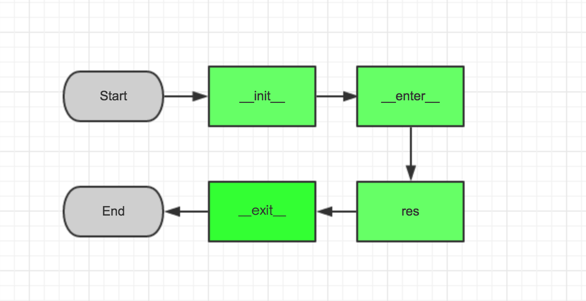

纸上得来终觉浅，绝知此事要躬行。
在Python中，所有以__双下划线包起来的方法，都统称为“魔术方法”。比如我们接触最多的__init__。有些魔术方法，我们可能一辈子都不会再遇到了。而有些魔术方法，巧妙使用它可以构造出非常优美的代码，比如将复杂的逻辑封装成简单的API。介绍的顺序大概是：常见的先介绍，越少见的越靠后讲。
| 魔术方法 | 调用方式 | 解释 |
|---|---|---|
__new__(cls [,...]) |
instance=MyClass(args) | 在创建实例的时候被调用 |
__init__(self [,...]) |
instance=MyClass(args) | 在创建实例的时候被调用 |
__cmp__(self, other) |
self==other, self>other | 在比较的时候调用 |
__pos__(self) |
+self | 一元加运算符 |
__neg__(self) |
-self | 一元减运算符 |
__invert__(self) |
~self | 取反运算符 |
__index__(self) |
x[self] | 对象被作为索引使用的时候 |
__nonzero__(self) |
bool(self) | 对象的布尔值 |
__getattr__(self, name) |
self.name | 访问一个不存在的属性时 |
__setattr__(self, name, val) |
self.name=val | 对一个属性赋值时 |
__delattr__(self, name) |
del self.name | 删除一个属性时 |
__getattribute__(self, name) |
self.name | 访问任何属性时 |
__getitem__(self, key) |
self[key] | 使用索引访问元素时 |
__setitem__(self, key, val) |
self[key] = val | 对某个索引值赋值时 |
__delitem__(self, key) |
del self[key] | 删除某个索引值时 |
__iter__(self) |
for x in self | 迭代时 |
__contains__(self, value) |
value [not] in self | 使用 in 操作测试关系时 |
__concat__(self, value) |
self+other | 连接两个对象时 |
__call__(self [,...]) |
self(args) | “调用”对象时 |
__enter__(self) |
with self as x: | with 语句环境管理 |
__exit__(self, exc, val, trace) |
with self as x: | with 语句环境管理 |
__getstate__(self) |
pickle.dump(file, self) | 序列化 |
__setstate__(self) |
data=pickle.load(file) | 序列化 |
1. 构造函数
控制属性访问特点
| 魔法函数 | 解释说明 |
|---|---|
__new__ |
构造函数 |
__init__ |
初始化函数 |
__del__ |
删除函数 |
函数作用
- 用于创建对象时，初始化对象，也就是为对象成员变量赋初始值。
注意要点
__new__要早于__init__的执行__new__是类方法而__init__是实例方法
示例说明
- 构造方法并不负责创建实例，而是用来初始化实例变量
# __new__用户设置初始化类变量PAYLOAD的值
# 这里的super函数让其余变量继承自父类，再对新变量赋值
class ExampleClass:
def __new__(cls, *args, **kwargs):
print('Create new instance...')
instance = super().__new__(cls)
instance.PAYLOAD = (args, kwargs)
return instance
def __init__(self, payload):
print('Init instance...')
self.payload = payload
def __del__(self):
print('Del instance...')
In [1]: from func import ExampleClass
In [2]: ec = ExampleClass([1, 2])
Create new instance...
Init instance...
In [3]: ec.PAYLOAD
Out[3]: (([1, 2],), {})
In [4]: ec.payload
Out[4]: [1, 2]
In [5]: del ec
Del instance...
- 如果
__new__函数不创建实例，__init__函数是不会执行的
# 这里并没有使用super函数，而是直接返回了object的__new__方法
In [1]: class ExampleClass:
...: def __new__(cls, *args, **kwargs):
...: print("call __new__")
...: print(type(cls))
...: return object.__new__(cls)
...:
...: def __init__(self, x):
...: print("call __init__")
...: print(type(self))
...: s1 = set(dir(self))
...: self.x = x
...: s2 = set(dir(self))
...: print(s2-s1)
...:
In [2]: a = ExampleClass(5)
call __new__
<class 'type'>
call __init__
<class '__main__.A'>
{'x'}
In [3]: class ExampleClass:
...: def __new__(cls, *args, **kwargs):
...: print("call __new__")
...: print(type(cls))
...:
...: def __init__(self, x):
...: print("call __init__")
...: print(type(self))
...: s1 = set(dir(self))
...: self.x = x
...: s2 = set(dir(self))
...: print(s2-s1)
...:
In [4]: a = ExampleClass(5)
call __new__
<class 'type'>
2. 对象可视化
- 控制属性访问特点
| 魔法函数 | 解释说明 |
|---|---|
__repr__ |
字符串（程序友好） |
__str__ |
字符串（用户友好） |
__bytes__ |
二进制 |
- 代码示例说明
In [1]: class A:
....: def __init__(self, name):
....: self.name = name
....: def __repr__(self):
....: return self.name
....: def __str__(self):
....: return 'call __str__ name is {0}'.format(self.name)
....: def __bytes__(self):
....: return 'call _bytes__ name is {0}'.format(self.name).encode('utf-8')
....:
In [2]: cls = A('escape')
# __repr__()
In [3]: cls
Out[3]: <func.MyClass at 0x110c078d0>
# __str__()
In [4]: print(a)
call __str__ name is escape
# __repr__()
In [5]: repr(a)
Out[5]: escape
# __str__()
In [5]: str(a)
Out[5]: 'call __str__ name is escape'
# __bytes__()
In [6]: bytes(a)
Out[6]: b'call _bytes__ name is escape'
3. 反射
可以使用代码获取对象本身的一些属性，如对象的字段、方法等，就算是反射。
- 魔术方法特点
| 魔法函数 | 解释说明 |
|---|---|
xxx.__class__ |
获取当前实例的类名 |
xxx.__doc__ |
获取文档字符串 |
xxx.__dir__ |
内建函数 dir 实际调用的函数 |
xxx.__dict__ |
获取此实例持有的所有变量 |
xxx.__module__ |
返回当前所在的模块 |
xxx.__name__ |
获取类的名称，实例没有 |
- 代码示例说明
In [34]: class ExcapleClass:
....: X = 1
....: Y = 2
....: Z = 3
....: def __init__(self, x, y, z):
....: self.x = x
....: self.y = y
....: self.z = z
....: def method(self):
....: pass
....:
In [35]: ec = ExcapleClass(1,2,3)
In [36]: ec.__doc__
In [37]: ec.__dict__
Out[37]: {'x': 1, 'y': 2, 'z': 3}
In [38]: ec.__class__
Out[38]: __main__.Grok
In [39]: ec.__dir__
Out[39]: <function Grok.__dir__>
In [40]: ec.__dir__()
......
4. 比较运算符重载
- 控制属性访问特点
| 魔法函数 | 解释说明 |
|---|---|
__lt__ |
小于 |
__le__ |
小于等于 |
__eq__ |
等于 |
__nq__ |
不等于 |
__gt__ |
大于 |
__ge__ |
大于等于 |
- 代码示例说明
# 需要在对象定义的时候通过比较运算重载来实现比较的
In [1]: class Person:
....: def __init__(self, age):
....: self.age = age
....: def __lt__(self, other):
....: return self.age < other.age
....: def __le__(self, other):
....: return self.age <= other.age
....: def __eq__(self, other):
....: return self.age == other.age
....: def __nq__(self, other):
....: return self.age == other.age
....: def __gt__(self, other):
....: return self.age > other.age
....: def __ge__(self, other):
....: return self.age >= other.age
....:
In [2]: p1 = Person(18)
In [3]: p2 = Person(14)
In [4]: p1 > p2
Out[4]: True
In [5]: p1 < p2
Out[5]: False
5. 上下文管理器
with后面紧跟一个实例，这个实例具有__enter__和__exit__方法。

魔术方法特点
| 魔法函数 | 解释说明 |
|---|---|
__enter__ |
进入with块后立即执行__enter__方法 |
__exit__ |
退出with块后立即执行__exit__方法 |
方法特性说明
as子句用于把__enter__方法的返回值，赋值给一个变量__exit__方法在报错的时候，返回三个参数的一个元组(exc_type, exc, traceback)exc_type表示报错的类型exc表示报错的信息traceback表示堆栈信息
方法使用场景
- 成对出现操作，并且必须确保两个都执行
- 资源打开和关闭
- 加锁和解锁
- 进入代码块之前需要执行一些操作
- 初始化
- 权限判断
- 离开代码块之后需要执行一些操作
- 关闭资源连接
- 解锁
代码示例说明
- 这里我们引入的是一个简单的示例进行方式和演示
# 当socket出现问题，连接也是会正常关闭的，不用手动关闭连接
import socket
class SocketClient:
def __init__(self, host, port):
self.host = host
self.port = port
self.conn = socket.socket()
def __enter__(self):
self.conn.connect((self.host, self.port))
return self.conn
# 接收三个参数 __exit__(self, exc_type, exc, traceback)
def __exit__(self, *args, **kwargs):
self.conn.close()
with SocketClient('192.168.1.199', 8000) as conn:
print(conn)
- 相关的库
contextlib可以帮助我们更好的使用上下文管理
import contextlib
@contextlib.contextmanager
def connect(host, port):
conn = socket.socket()
try:
conn.connect((host, port))
yield conn
finally:
conn.close()
with connect('192.168.1.199', 8000) as conn:
print(conn)
6. 属性访问控制
使用字符串操作对象的属性，通过点操作符操作的都可以使用，如属性、方法等。
控制属性访问特点
| 魔法函数 | 解释说明 |
|---|---|
__getattr__ |
在属性被访问而对象没有这样的属性时自动调用 |
__setattr__ |
试图给属性赋值时自动调用 |
__delattr__ |
试图删除属性时自动调用 |
__getattribute__ |
在属性被访问时自动调用，且只适用于新式类；它和__getattr__的区别是无论属性是否存在，都要被调用；通过访问该方法无法获取时，再使用__getattr__获取，依旧无法获取则报错 |
特殊方法说明
| 特殊方法 | 解释说明 |
|---|---|
getattr |
调用__getattribute__方法，通过字符串的方式访问类的属性，等价于a.num |
setattr |
实际调用__setattr__方法，通过属性名修改属性，等价于a.num=3 |
delattr |
实际调用__delattr__方法，通过属性名删除属性，等价于del a.num |
# getattr
getattr(...)
getattr(object, name[, default]) -> value
Get a named attribute from an object; getattr(x, 'y') is equivalent to x.y.
When a default argument is given, it is returned when the attribute doesn't
exist; without it, an exception is raised in that case.
# setattr
setattr(...)
setattr(object, name, value)
Set a named attribute on an object; setattr(x, 'y', v) is equivalent to
``x.y = v''.
# delattr
delattr(...)
delattr(object, name)
Delete a named attribute on an object; delattr(x, 'y') is equivalent to
``del x.y''.
代码示例说明
- 对于
getattr、setattr、delattr三个属性的初步了解。
class Attr:
X = 1
Y = 2
def __init__(self, name):
self.name = name
def show_num(self):
return self.name
def __setattr__(self, name, value):
print('settattr')
def __getattr__(self, name):
print('getattr')
def __getattribute__(self, name):
print('getattribute')
def __delattr__(self, name):
print('delattr')
# 我们由此可以看出，外部调用都是我们自己定义的方法
In [1]: from magic import Attr
In [2]: a = Attr('escape')
getattribute
getattribute
settattr
In [3]: getattr(a, 'X')
getattribute
In [4]: setattr(a, 'name', 'attr')
settattr
In [5]: delattr(a, 'name')
delattr
getattr方法有第三个可选参数，用于方法不存在时的替补方案
class WorkerInterface:
def method1(self):
print(1)
def method2(self):
print(2)
def method3(self):
print(3)
class WorkerImpl:
def method2(self):
print('impl 2')
imterface = WorkerInterface()
impl = WorkerImpl()
getattr(impl, 'method1', imterface.method2)() ==> 返回，2
getattr(impl, 'method2', imterface.method2)() ==> 返回，impl2
- 在调用
__getattribute__的时候，最后返回的时候用的是object.__getattribute__而没有用self.__getattribute__。这是由于，如果使用了self那么无论使用了self中的什么属性，最后都会触发__getattribute__的调用，这样就陷入了一个死循环中了。
# 其中getattr方法调用的我们自定义的__getattribute__方法
# 而其他的方法，则都使用object的方法，为了避免陷入死循环中
# ...写法是Python3.6中的新用法，类似于pass这样的用法，可以等价使用
class User:
...
class Proxy:
title = '代理'
_data = User()
def show_title(self):
return self.title
def __getattr__(self, name):
print('use __getattr__')
return getattr(self._data, name)
def __setattr__(self, name, value):
print('use __setattr__')
return object.__setattr__(self._data, name, value)
def __delattr__(self, name):
print('use __delattr__')
return object.__delattr__(self._data, name)
def __getattribute__(self, name):
if name in ('_data', 'title', 'show_title'):
return object.__getattribute__(self, name)
print('use __getattribute__: {}'.format(name))
if name.startswith('b'):
raise AttributeError
return object.__getattribute__(self._data, name)
In [1]: from func import Proxy
In [2]: p = Proxy()
In [3]: p.title
Out[3]: '代理'
In [4]: p.show_title()
Out[4]: '代理'
In [5]: p.a = 1
use __setattr__
In [6]: p.a
use __getattribute__: a
Out[6]: 1
In [7]: p.b = 2
use __setattr__
In [8]: p.b
use __getattribute__: b
use __getattr__
Out[8]: 2
In [9]: p._data.b
Out[9]: 2
In [10]: del p.b
use __delattr__
In [11]: p.b
use __getattribute__: b
use __getattr__
---------------------------------------------------------------------------
AttributeError Traceback (most recent call last)
<ipython-input-11-e53b1e7b3bff> in <module>()
----> 1 p.b
~/Escape/MorePractise/func.py in __getattr__(self, name)
12 def __getattr__(self, name):
13 print('use __getattr__')
---> 14 return getattr(self._data, name)
15
16 def __setattr__(self, name, value):
AttributeError: 'User' object has no attribute 'b'
7. 容器方法
容器方法特点
| 魔法函数 | 解释说明 |
|---|---|
__getitem__ |
得到给定键(key)的值 |
__setitem__ |
设置给定键(key)的值 |
__delitem__ |
删除给定键(key)的值 |
__slots__ |
阻止在实例化类时为实例分配 dict 属性 |
__len__ |
获得项的数目 |
__slots__方法的用处
- 方法优点
- <1> 减少内存使用、
- <2> 限制对实例添加新的属性
- 方法缺点
- <1> 不可以被继承、
- <2> 不可以动态添加新的属性
- 方法用途
__slots__的作用是为了阻止在实例化类时为实例分配dict属性。默认情况下每个类都会有一个dict，这个dict维护了这个实例的所有属性，可以通过__dict__来访问。
# 【实际用途一】减少内存的使用
class Foo:
__slots__ = ('name', 'age')
def __init__(self, name, age):
self.name = name
self.age = age
# 为何使用__slots__呢？
# 字典会占用大量内存，如果你有一个属性很少的类，但却有很多实例
# 我们为了节省内存可以使用__slots__取代实例的__dict__属性
# 当你定义__slots__后，__slots__就会为实例使用一种更加紧凑的内部表示
# 实例通过一个很小的固定大小的数组来构建，而不是为每个实例定义一个字典，这跟元组或列表很类似。
# 在__slots__中列出的属性名在内部被映射到这个数组的指定小标上。
# 使用__slots__一个不好的地方就是我们不能再给实例添加新的属性了，只能使用在__slots__中定义的那些属性名。
In [1]: from func import Foo
In [2]: f = Foo('escape', 18)
In [3]: print(f.__slots__)
('name', 'age')
In [4]: print(f.__dict__)
----------------------------------------------------------
AttributeError Traceback (most recent call last)
<ipython-input-4-6687d1113b56> in <module>()
----> 1 print(f.__dict__)
AttributeError: 'Foo' object has no attribute '__dict__'
# 【实际用途二】限制对实例添加新的属性
class Foo:
__slots__ = ('name', 'age')
def __init__(self, name, age):
self.name = name
self.age = age
In [1]: from func import Foo
In [2]: f = Foo('escape', 18)
In [3]: print(f.name)
escape
In [4]: print(f.age)
18
In [5]: f.sex = 'N'
----------------------------------------------------------
AttributeError Traceback (most recent call last)
<ipython-input-5-3fee1c97a399> in <module>()
----> 1 f.sex = 'N'
AttributeError: 'Foo' object has no attribute 'sex'
容器方法实例说明
- 其中
__dict__就是存放对象属性的一个字典，名称就是对象变量的名称，值就是该对象的值。 AttrDict类能够节省很多代码，就是因为使用__dict__字典。AttrDict访问属性的时候，就从__dict__中直接获取，所以我们只需要维护这个字典就行了。
class AttrDict:
def __init__(self, **kwargs):
self.__dict__.update(**kwargs)
def __getitem__(self, key):
return self.__getattribute__(key)
def __setitem__(self, key, value):
self.__setattr__(key, value)
def __delitem__(self, key):
self.__delattr__(key)
def __len__(self):
return len(self.__dict__)
In [4]: from func import AttrDict
In [5]: d = AttrDict(a=1, b=2)
# 通过点的方式访问就得益于__dict__这个字典
In [6]: d.a
Out[6]: 1
# 通过中括号访问就得益于__setitem__方法
In [7]: d['a']
Out[7]: 1
# 通过中括号设置就得益于__getitem__方法
In [8]: d['c'] = 3
In [9]: d.c
Out[9]: 3
In [11]: len(d)
Out[11]: 3
In [12]: d.d
---------------------------------------------------------------------------
AttributeError Traceback (most recent call last)
<ipython-input-12-e165f334f46e> in <module>()
----> 1 d.d
AttributeError: 'AttrDict' object has no attribute 'd'
- 字典痛点的最佳实现 - 参考链接 class, dict, self, init, args?
# 最好的AttrDict实现，考虑这里为什么要使用dict.__init__方法
class AttrDict(dict):
def __init__(self, **kwargs):
dict.__init__(self, **kwargs)
self.__dict__ = self
a = AttrDict(x=1, y=2)
# 我们知道AttrDict继承自dict，且第三行中调用dict的__init__方法，
# 将self实例变成一个字典，这时self的内容为{'x':1, 'y':2}。
# 每一个实例都有一个字典持有它自己的属性，这就是__dict__这个字典，
# 所以第四行中，就是a.__dict__ = {'x':1, 'y':2}这样的表示，
# 此时我们就可以使用a.x和a.y来访问对应的值。
8. 可调用对象
可调用对象就是定义了
__call__方法，可以当作函数来使用。
控制属性访问特点
| 魔法函数 | 解释说明 |
|---|---|
__call__ |
可调用对象并常用在装饰器上，分为类装饰器和函数装饰器 |
注意要点解释
- 当一个对象具有
__call__方法时，此对象称之为可调用对象 - 当调用一个可调用对象时，实际上调用的是
__call__方法 - 内置函数
__callable__用于判断一个对象是否是可调用对象
实例代码说明
# 调用__call__方法使用类来实现斐波那契数列
class Fibonacci:
def __init__(self):
self.cache = {}
def __call__(self, n):
if n not in self.cache:
if n == 0:
self.cache[0] = 0
elif n == 1:
self.cache[1] = 1
else:
self.cache[n] = self.__call__(n-1) + self.__call__(n-2)
return self.cache[n]
fib = Fibonacci()
for i in range(15):
print(fib(i), end = ", ")
重要的 wrap 函数
help(wraps)
wraps(wrapped, assigned=('__module__', '__name__', '__qualname__', '__doc__', '__annotations__'), updated=('__dict__',))
Decorator factory to apply update_wrapper() to a wrapper function
Returns a decorator that invokes update_wrapper() with the decorated
function as the wrapper argument and the arguments to wraps() as the
remaining arguments. Default arguments are as for update_wrapper().
This is a convenience function to simplify applying partial() to
update_wrapper().
可调用对象的用途
- 给函数的类装饰器 – 不带参数
- 这种方式只能不带任何参数的方式使用
# 【原始函数装饰器实现】
# 用类实现一个不带参数的装饰器
# 但是调用的时候是有缺陷的，无法得到实例属性
import time
class Timeit:
def __init__(self, fn):
self.fn = fn
def __call__(self, *args, **kwargs):
start = time.time()
ret = self.fn(*args, **kwargs)
end = time.time()
print(end-start)
return ret
@Timeit
def sleep():
time.sleep(3)
return 1
sleep() # 正常调用
sleep.__name__ # 报错，提示没有此属性
# 【改进版函数装饰器实现】
# 相当于给self增加一些属性(wraps指定的属性)
# wraps(fn)(self) ==> 表示把fn的属性封装给self
import time
from functools import wraps
class Timeit:
def __init__(self, fn):
# 等价于self.wrapped = wraps(fn)(self)
wraps(fn)(self)
def __call__(self, *args, **kwargs)：
start = time.time()
# 等价于self.wrapped.__wrapped__(*args, **kwargs)
ret = self.__wrapped__(*args, **kwargs)
end = time.time()
print(end-start)
return ret
@Timeit
def sleep():
'''ret sleep time'''
time.sleep(3)
return 1
sleep() # 正常调用
sleep.__name__ # 正常调用
sleep.__doc__ # 正常调用
- 给函数的类装饰器 – 带参数的
- 可以带参数的方式使用
- 可以不带参数的方式使用
# 实现了带参数的函数装饰器，不带参数就需要实现__init__方法
# 这里的@wraps(fn)表示把fn的所有属性封装给self对象
# 不带参数的方式使用，需要将__init__方法去掉
# 之后在装饰函数的时候，使用@InjectUser()，括号不能省略
from functools import wraps
class InjectUser:
def __init__(self, default_user):
self.default_user = default_user
def __call__(self, fn):
@wraps(fn)
def wrap(*args, **kwargs):
if self.default_user not in kwargs.keys():
raise Exception('The user is not allow.')
return fn(*args, **kwargs)
return wrap
# 这个是函数装饰器，在do_somethings中添加装饰器InjectUser，相当于InjectUser(do_somethings)()。
In [5]: from magic import InjectUser
In [6]: @InjectUser('name')
...: def do_somethings(**kwargs):
...: print('Allow with attribute name')
...:
In [7]: do_somethings(name='escpae')
Allow with attribute name
In [8]: do_somethings(title='spring')
---------------------------------------------------------------------------
Exception Traceback (most recent call last)
<ipython-input-21-6471a025084b> in <module>()
----> 1 do_somethings(names='escape')
~/Escape/MorePractise/magic.py in wrap(*args, **kwargs)
10 def wrap(*args, **kwargs):
11 if self.default_user not in kwargs.keys():
---> 12 raise Exception('The user is not allow.')
13 return fn(*args, **kwargs)
14 return wrap
Exception: The user is not allow.
- 给类用的类装饰器 – 不带参数
- 这种方式只能不带任何参数的方式使用
# 【单例类装饰器 -- 基本实现】
# 实现了不带参数的类装饰器，__init__接收到的是实例本身
class SingleInstance:
__instance = None
def __init__(self, cls):
self.cls = cls
def __call__(self, *args, **kwargs):
if self.__instance is None:
self.__instance = self.cls(*args, **kwargs)
return self.__instance
# 在do_somethings中添加装饰器SingleInstance，相当于SingleInstance(do_somethings)。正因为如此，所以`id`值相同，调用方式为SingleInstance(do_somethings)()。
In [13]: from magic import SingleInstance
In [14]: @SingleInstance
...: class do_somethings:
...: pass
...:
In [15]: ds1 = do_somethings()
In [16]: ds2 = do_somethings()
In [17]: id(ds1)
Out[17]: 4389080760
In [18]: id(ds2)
Out[18]: 4389080760
In [19]: SingleInstance(do_somethings)()
Out[19]: <__main__.do_somethings at 0x1059c0eb8>
In [20]: ds1
Out[20]: <__main__.do_somethings at 0x1059c0eb8>
In [21]: ds2
Out[21]: <__main__.do_somethings at 0x1059c0eb8>
# 【单例类装饰器 -- 完美实现】
# 这里使用到了wraps这个函数
class Singleton:
def __init__(self, cls):
# 等价于self.wrapped = wraps(cls)(self)
wraps(cls)(self)
self.instance = None
def __call__(self, *args, **kwargs):
if self.instance is None:
# 等价于self.wrapped.__wrapped__(*args, **kwargs)
self.instance = self.__wrapped__(*args, **kwargs)
return self.instance
@Singleton
class A:
'''singleton class A'''
pass
a = A()
a.__doc__ # 正常输出 singleton class A
- 给类用的类装饰器 – 方式二
- 可以带参数的方式使用
- 可以不带参数的方式使用
from functools import wraps
# 给函数用的不带参数的类装饰器
class FunWithoutArgs:
def __init__(self, fn):
self.fn = fn
def __call__(self, *args, **kwargs):
print('start...')
res = self.fn(*args, **kwargs)
print('end...')
return res
# 给函数用的不带参数的类装饰器
class FunWithoutArgsOther:
def __init__(self):
pass
def __call__(self, fn):
@wraps(fn)
def wrap(*args, **kwargs):
print('start...')
res = fn(*args, **kwargs)
print('end...')
return res
return wrap
# 给函数用的带参数的类装饰器
class FunWithArgs:
def __init__(self, user):
self.user = user
def __call__(self, fn):
@wraps(fn)
def wrap(*args, **kwargs):
if self.user not in kwargs.keys():
raise ValueError('Error')
print('Allow...')
res = fn(*args, **kwargs)
return res
return wrap
from functools import wraps
# 给类用的不带参数的类装饰器
class ClassWithoutArgs:
def __init__(self, cls):
self.cls = cls
self._instance = None
def __call__(self, *args, **kwargs):
if self._instance is None:
print('class without args...')
self._instance = self.cls(*args, **kwargs)
return self._instance
# 给类用的不带参数的类装饰器
class ClassWithArgs:
def __init__(self, user):
pass
def __call__(self, cls):
@wraps(cls)
def wrap(*args, **kwargs):
print('class with args...')
self._instance = cls(*args, **kwargs)
return self._instance
return wrap
# 给类用的带参数的类装饰器
class ClassWithArgs:
def __init__(self, user):
self.user = user
def __call__(self, cls):
@wraps(cls)
def wrap(*args, **kwargs):
if self.user not in kwargs.keys():
raise ValueError('Error')
print('class with args...')
self._instance = cls()
return self._instance
return wrap
9. 描述器
描述器是一个具有
__get__和__set__方法的类，较多用于类型检查。
魔术方法特点
| 魔法函数 | 解释说明 |
|---|---|
__get__ |
获取对象属性时调用 |
__set__ |
设置对象属性时调用 |
__delete__ |
删除对象属性时调用 |
方法特性说明
- 当一个类变量具有
__get__和__set__方法的时候，访问这个类变量时会调用__get__方法，对这个类变量赋值的时会调用__set__方法。 - 描述器单独出现时没有意义的，她总是和其他类的类属性一起出现的，事实上，描述器描述了类属性的访问、赋值和删除行为，所有叫做描述器。
- 我们之前学习的
@property装饰器也可以实现同样的效果，因为它底层就是靠描述器来实现的。
描述器的用处
- 变量类型检查 – 初步实现
# 其实这里有一个问题
# 那就是当我们调用Point.x的时候，其实是调用Point.x.__get__(None, Point)
# 但是在Number()中我们并没有进行设定，所以这里还是需要修改一下的
class Number:
def __init__(self, name):
self.name = name
def __get__(self, instance, cls):
print('get number...')
# 防止类直接调用报异常
if instance is None:
return self
return instance.__dict__[self.name]
def __set__(self, instance, value):
print('set number...')
if not isinstance(value, (int, float)):
raise TypeError('{} require int'.format(self.value))
instance.__dict__[self.name] = value
def __delete__(self, instance):
print('del number...')
del instance.__dict__[self.name]
class Point:
x = Number('x')
y = Number('y')
def __init__(self, x, y):
self.x = x
self.y = y
In [1]: from magic import Point
In [3]: point = Point(1, 2)
set number...
set number...
In [4]: point.x, point.y
get number...
get number...
Out[4]: (1, 2)
In [5]: point.x = 100
set number...
In [6]: point.x, point.y
get number...
get number...
Out[6]: (100, 2)
In [7]: del point.x
del number...
In [8]: point.x
get number...
---------------------------------------------------------------------------
KeyError Traceback (most recent call last)
<ipython-input-8-215ed0a20111> in <module>()
----> 1 point.x
~/Escape/MorePractise/magic.py in __get__(self, instance, cls)
5 def __get__(self, instance, cls):
6 print('get number...')
----> 7 return instance.__dict__[self.name]
8
9 def __set__(self, instance, value):
KeyError: 'x'
- 变量类型检查 – 进阶实现
# 可以自定义变量的类型
class Tpyed:
def __init__(self, name, expected_type):
self.name = name
self.expected_type = expected_type
def __get__(self, instance, cls):
if instance is not None:
return instance.__dict__[self.name]
return self
def __set__(self, instance, value):
if isinstance(value, self.expected_type):
raise TypeError('Error')
instance.__dict__[self.name] = value
def __delete__(self, instance):
del instance.__dict__[self.name]
# 利用装饰器进行变量类型限制
class Point:
x = Tpyed('x', (int, float))
y = Tpyed('y', (int, float))
def __init__(self, x, y):
self.x = x
self.y = y
- 变量类型检查 – 高级实现
class Typed:
def __init__(self, name, required_type):
self.name = name
self.required_type = required_type
def __get__(self, instance, cls):
if instance is None:
return self
return instance.__dict__[self.name]
def __set__(self, instance, value):
if not isinstance(value, self.required_type):
raise TypeError('{} required type {}'.format(self.name, self.required_type))
instance.__dict__[self.name] = value
def typeassert(**kwargs):
def dec(cls):
for name, required_type in kwargs.items():
setattr(cls, name, Typed(name, required_type))
return cls
return dec
# 直接使用装饰器
@typeassert(name=str, age=int)
class Person:
def __init__(self, name, age):
self.name = name
self.age = age
# 正常初始化实例
man = Person('escpae', 12)
# 抛出TypeError异常
man = Person(12, 'escpae')
- 变量类型检查 – 高阶实现
from inspect import signature
class Typed:
def __init__(self, name, required_type):
self.name = name
self.required_type = required_type
def __get__(self, instance, cls):
if instance is None:
return self
return instance.__dict__[self.name]
def __set__(self, instance, value):
if not isinstance(value, self.required_type):
raise TypeError('{} required type {}'.format(self.name, self.required_type))
instance.__dict__[self.name] = value
def typeassert(cls):
sig = signature(cls)
for k, v in sig.parameters.items():
setattr(cls, k, Typed(k, v.annotation))
return cls
@typeassert(name=str, age=int)
class Person:
def __init__(self, name: str, age: int):
self.name = name
self.age = age
# 正常初始化实例
man = Person('escpae', 12)
# 抛出TypeError异常
man = Person(12, 'escpae')
- 变量类型检查 – 装饰器实现
from functools import wraps
def typeassert(**kwargs):
def inner(cls):
@wraps(cls)
def wrap(**kwargs):
for k, v in kwargs.items():
setattr(cls, k, Tpyed(k,v))
return cls
return wrap
return inner
@typeassert(x=int, y=float, z=str, m=str)
class Spam:
def __init__(self, x, y, z, m):
self.x = x
self.y = y
self.z = z
self.m = m
In [18]: s = Spam(x=1, y=1.2, z='test', m='abc')
- 实现 property 装饰器 – 初步实现
# 这里不用实现getattr是因为@Property装饰器装饰的是x这个函数，所有fget默认赋值为x这个函数
# 虽然简单的实现了@property装饰器的功能，但是装饰的函数必须不一样的，而@property装饰器是一样的
class Property:
def __init__(self, fget=None, fset=None, fdel=None):
self.fget = fget
self.fset = fset
self.fdel = fdel
def __get__(self, instance, cls):
if self.fget is not None:
return self.fget(instance)
def __set__(self, instance, value):
if self.fset is not None:
self.fset(instance, value)
def __delete__(self, instance):
if self.fdel is not None:
self.fdel(instance)
def getter(self, fn):
self.fget = fn
def setter(self, fn):
self.fset = fn
def deleter(self, fn):
self.fdel = fn
class Spam:
def __init__(self, val):
self.__val = val
@Property
def val(self):
return self.__val
@val.setter
def set_val(self, value):
self.__val = value
In [21]: s = Spam(3)
# 相当于调用Spam.val__get__(s, Spam)
In [22]: s.val
Out[22]: 3
# 相当于调用Spam.val__set__(s, value)
In [23]: s.val = 4
Out[23]: 4
# 类变量也可以这样使用
In [25]: class ClassProperty:
....: def __init__(self, fn):
....: self.fn = fn
....: def __get__(self, instance, cls):
....: return self.fn(cls)
....:
In [26]: class Spam:
....: __val = 3
....: @ClassProperty
....: def val(cls):
....: return cls.__val
....: @ClassProperty
....: def name(cls):
....: return cls.__name__.lower()
....:
In [27]: s = Spam()
In [28]: s.val
Out[28]: 3
In [29]: s.name
Out[29]: 'spam'
- 实现 property 装饰器 – 完美实现
class Property:
def __init__(self, fget=None, fset=None, fdel=None):
self.fget = fget
self.fset = fset
self.fdel = fdel
def __get__(self, instance, cls):
print('get')
if instance is None:
return self
if not callable(self.fget):
raise AttributeError('fget is not callable')
return self.fget(instance)
def __set__(self, instance, value):
print('set')
if not callable(self.fset):
raise AttributeError('fset is not callable')
self.fset(instance, value)
def __delete__(self, instance):
if not callable(self.fdel):
raise AttributeError('fdel is not callable')
self.fdel(instance)
def setter(self, fset):
# self.fset = fset
return Property(self.fget, fset, self.fdel)
def deleter(self, fdel):
# self.fdel = fdel
return Property(self.fget, self.fset, fdel)
# 使用描述器的函数
class A:
def __init__(self, x):
self.__x = x
# 等价于 x == Property(A.x)
# 其中A.x表示类A的x方法(下面这个方法)
@Property
def x(self):
return self.__x
# 等价于 x == x.setter(A.x) == Property(x.fget, A.x, x.fdel)
# 其中x.setter中的x是上一步x == Property(A.x)生成的x
# 其中A.x表示类A的x方法(下面这个方法)
@x.setter
def x(self, value):
self.__x = value
# 等价于 x == x.deleter(A.x) == Property(x.fget, x.fset, A.x)
# 其中x.setter中的x是上一步x == Property(A.x)生成的x
# 其中A.x表示类A的x方法(下面这个方法)
@x.deleter
def x(self):
del self.__x
a = A(4)
print(a.x)
# 正常执行
a.x = 123
# 正常执行
del a.x
- 实现 classmethod 装饰器
from functools import wraps, partial
class ClassMethod:
def __init__(self, method):
wraps(method)(self)
def __get__(self, instance, cls):
# 类方法总是把变量当作类传递进来
return partial(self.__wrapped__, cls)
class A:
@ClassMethod
def method(cls):
print(cls)
@ClassMethod
def method2(cls, x):
print(cls)
print(x)
a = A()
a.method()
a.method2()